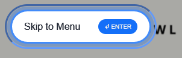
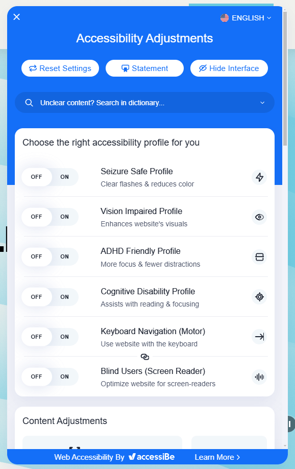
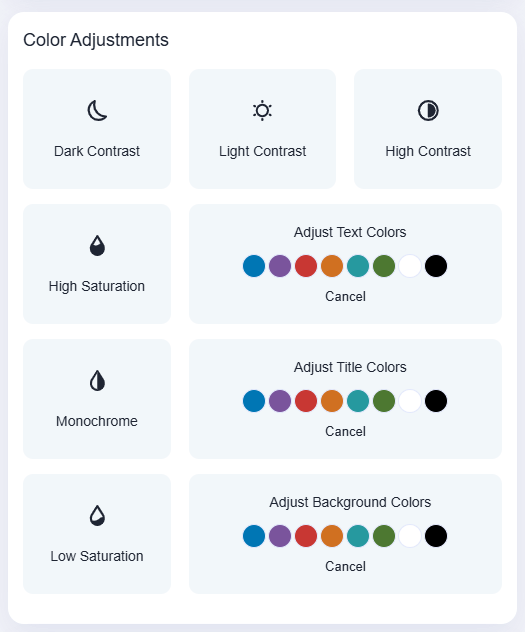

Skip to one of these sections...
Blue Bowl's Home Page
Blue Bowl is soft on the eyes and aesthetically pleasing. Unlike the other examples (if you’ve had a look at them already), they aren’t an accessibility focused website – they craft smoothie bowls. This is a great example of a website that considers accessibility despite their subject being so far from it.
Fig. 1 – “Skip to content” button.
Fig. 2 – “Skip to menu” button..
Fig. 3 – “Skip to content” button..
They have the option to skip to the content, menu, or footer as soon as you use the tab button on your keyboard (Fig. 1-3). Many websites don’t have this option (unless they’re like the previous example websites!) so it is a welcomed consideration.
Fig. 4 – Blue Bowl’s accessibility toolbar in its closed state.
Starting off strong, Blue Bowl has an accessibility toolbar located in the bottom right of the screen (Fig. 4). In this, users can make as many adjustments as they need!
Fig. 5 – Blue Bowl’s accessibility toolbar in its opened state.
It considers many needs users might have, from cognitive disabilities to visual impairments (Fig. 5).
Fig. 6 – Blue Bowl’s “Gift Cards” page as an example of their colour palette.
Many users prefer to look at colours that are more muted, thus calmer on the eyes. Blue Bowl’s initial colour palette doesn’t use any harsh whites or obnoxious pinks, and instead opts for beige and a calming blue (Fig. 6).
Fig. 7 – The “Colour Adjustments” section in Blue Bowl’s accessibility toolbar.
If users need the contrast to be higher, they can toggle this in the toolbar! (Fig. 7)
Blue Bowl uses fonts like “Times New Roman” and “Adrianna”, which aren’t considered to be the most accessible fonts. They could use a more accessible one to make sure their website in its original state is still trying to be accessible.
However, there is the option to change to a “readable font” in the accessibility toolbar, so there is not much to fault!
This website is such a great example of visually pleasing design while still being accessible. Users have the option to make adjustments to the visuals should they need them, and Blue Bowl’s brand identity still shines through.
Accessibility and aesthetic design are not mutually exclusive.